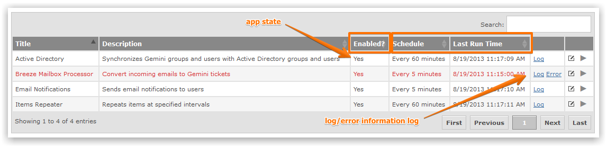
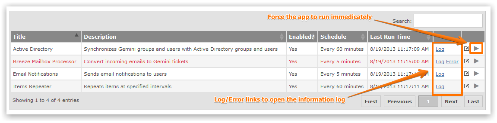
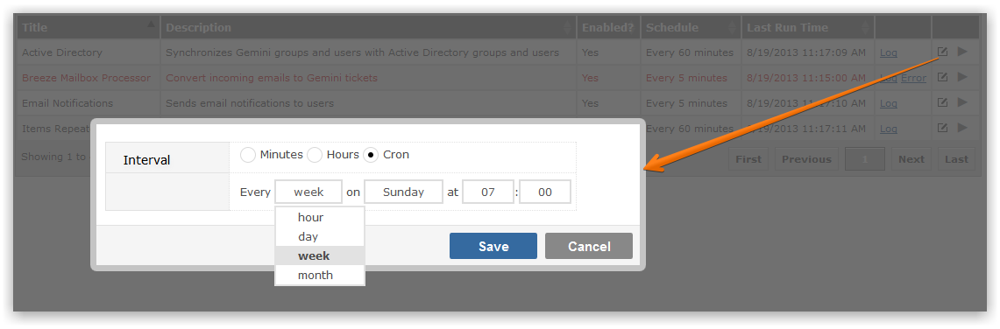

Timer apps allow you to invoke custom logic at set intervals. For example, you may wish to send email alerts every 15 minutes.
Gemini Administrators can enable, disable and set the schedule for every Timer App.

You can set the schedule between each app's run, check for errors and even force the Timer App to run immediately. Apps that have errored will be highlighted in red.
Timer apps can be configured to run at user specified intervals.

The Timer Apps: